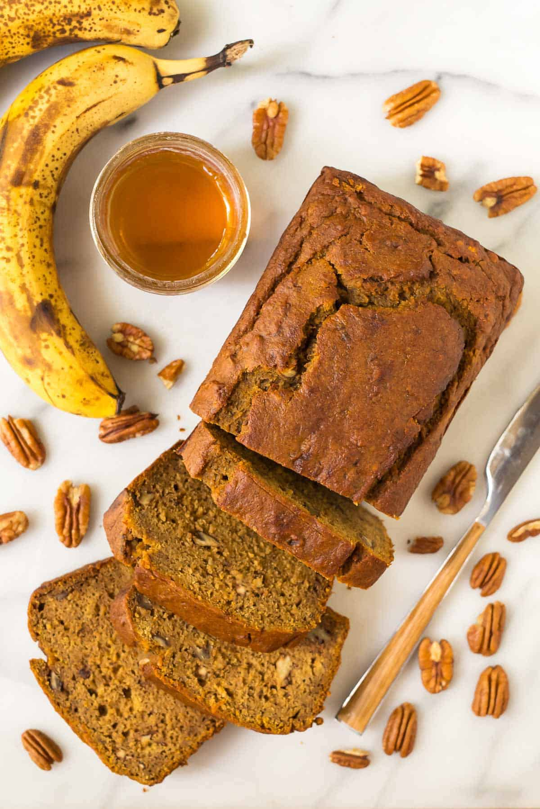
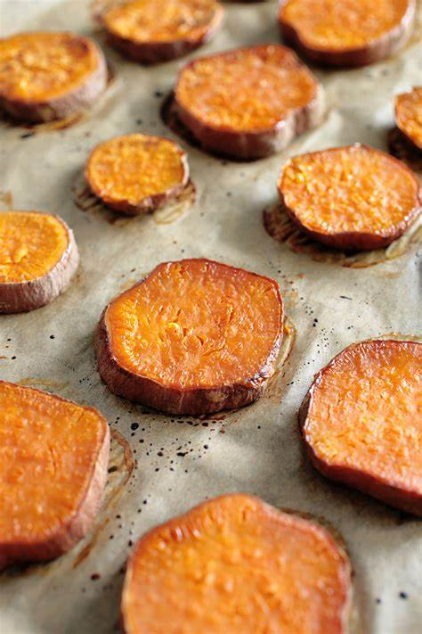
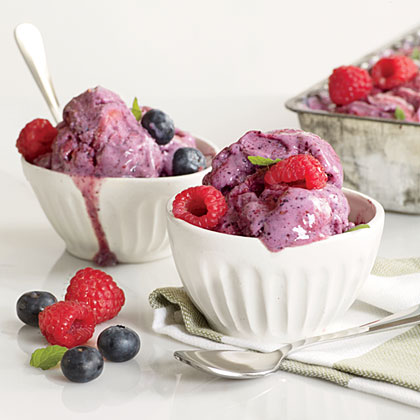

Bacon's Dog-Safe Treat Recipes
by Kevin Tan
Dog-Safe "Double Chocolate" Chips

Ingredients:
- 1 cup carob chips (a safe chocolate alternative for dogs)
- 1/2 cup unsalted, natural peanut butter
- 1/4 cup bacon bits (ensure no added onion, garlic, or excessive salt)
- 1 cup whole wheat flour (or substitute with coconut flour for a grain-free option)
- 2 eggs
Instructions:
- Preheat your oven to 350°F (175°C).
- In a large bowl, mix the peanut butter and eggs until well combined.
- Gradually add in the flour, mixing until a dough forms.
- Fold in the carob chips and bacon bits until they're evenly distributed.
- On a lined baking sheet, drop teaspoon-sized balls of the dough.
- Bake for 10-12 minutes until the edges start to turn golden.
- Let them cool completely before serving to Bacon.
Dog-Safe "Double Chocolate" Cookies

Ingredients:
- 1 and 1/2 cups carob powder (never use cocoa or chocolate)
- 1/4 cup coconut oil
- 1 cup rolled oats
- 1/2 cup unsweetened applesauce
- 1/4 cup shredded unsweetened coconut
- 1/2 teaspoon baking powder (make sure it's aluminum-free)
- 2 eggs
Instructions:
- Preheat the oven to 350°F (175°C).
- In a mixing bowl, stir together the carob powder, oats, shredded coconut, and baking powder.
- In another bowl, whisk the eggs and coconut oil until well combined, then mix in the applesauce.
- Gradually combine the wet ingredients into the dry ingredients.
- Use a spoon to drop cookie-sized amounts onto a baking sheet lined with parchment paper.
- Flatten them slightly with the back of the spoon.
- Bake for 15 minutes or until the cookies are firm to the touch.
- Allow to cool thoroughly before giving to Bacon.
Now Enjoy!
Dog-Safe Pumpkin Banana Treats
Ingredients:
- 2 cups whole wheat flour (or coconut flour for a grain-free option)
- 1/2 cup rolled oats
- 1/3 cup pumpkin puree (ensure it's plain pumpkin, not pie filling)
- 1 ripe banana, mashed
- 2 tablespoons natural, unsweetened peanut butter
- 1 large egg
Instructions:
- Preheat your oven to 350°F (175°C).
- In a large bowl, combine the flour and rolled oats.
- In another bowl, mix the pumpkin puree, mashed banana, and peanut butter until smooth.
- Beat in the egg to the pumpkin mixture.
- Gradually add the wet ingredients to the dry ingredients, stirring to combine.
- Roll the dough out on a floured surface to about 1/4 inch thickness.
- Use a cookie cutter to cut out shapes or simply cut into squares with a knife.
- Place the treats on a parchment-lined baking sheet and bake for 25-30 minutes until dry and hard.
- Let the treats cool completely before serving to Bacon.
Now Enjoy!
Dog-Safe Sweet Potato Bites
Ingredients
- 2 large sweet potatoes
- 1 tablespoon coconut oil
- A sprinkle of cinnamon
Instructions
- Preheat oven to 250°F (120°C).
- Wash and slice sweet potatoes into 1/3-inch slices.
- Coat with coconut oil and sprinkle cinnamon.
- Place on baking sheet and bake for 2-3 hours, flipping halfway.
- Allow to cool before serving.
Now Enjoy!
Dog-Safe Berry Yogurt Freeze
Ingredients
- 2 cups plain yogurt
- 1/2 cup blueberries
- 1/2 cup chopped strawberries
Instructions
- Blend yogurt and berries until smooth.
- Pour into ice cube trays or silicone molds.
- Freeze for at least 4 hours or until solid.
- Serve as a frozen treat for your dog.